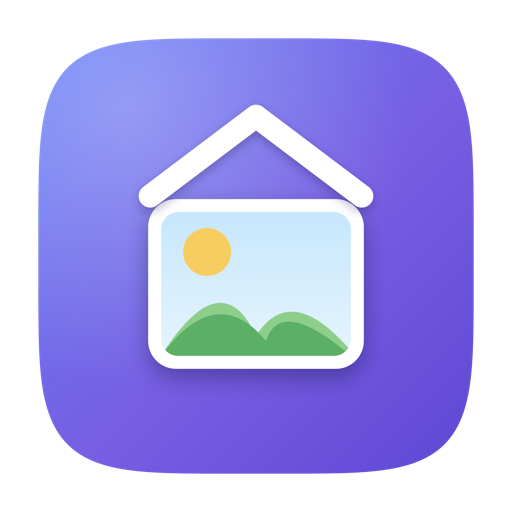

galleRE
The best way to organize, optimize, and manage your real estate MLS photos.
🍎 macOS only · free & open source
Universal build — Apple Silicon & Intel · macOS 14 (Sonoma) or later


The best way to organize, optimize, and manage your real estate MLS photos.
Universal build — Apple Silicon & Intel · macOS 14 (Sonoma) or later
Arrange photos in the exact order you want them on the MLS. A number badge shows each photo's position.
Renames files so Finder — and the MLS uploader — keep your order every time.
Batch-resize to the perfect upload size with one click. Your originals are never touched.
HEIC, PNG, TIFF and even PDF files convert straight to MLS-ready JPG on export.
Set your MLS's max photo count, then include/exclude with one click and trim to fit — the app counts for you.
Add a text watermark like "virtually staged or edited with AI" to any photo. Burned in on export; originals stay clean.
Tap a photo and hit Space for a big preview; arrow keys flip through the set.
Choose naming style, resize target, quality and output folder in a simple export wizard.
Every listing starts the same way: dozens of photos from the shoot and a specific order they need to appear in on the MLS. The trouble is that Finder sorts by filename, MLS uploaders sort by filename, and your camera's IMG_4821.jpg names have nothing to do with the story you want buyers to see — exterior, then living room, then the primary suite. galleRE fixes this at the source. Drag your photos into the perfect order once, click Save Current Order, and the files are renamed with sequential numbers so Finder, each MLS, and your website all display them in the same order — automatically.
If you list on more than one MLS — or re-upload the same set to Zillow, your brokerage site, a virtual tour, and a printed flyer — you normally have to recreate that exact photo order every single time. Because galleRE bakes the order into the filenames, your photos stay in the same sequence everywhere you upload them. Reorder by drag-and-drop, and reuse the same optimized folder across every system instead of re-sorting by hand.
MLS systems are picky about photo size. Upload a 24-megapixel file straight from the camera and it's rejected or painfully slow; upload something too small and it looks bad on a big screen. galleRE batch-resizes every photo to your MLS's ideal dimensions in one click, with quality you control, and converts iPhone HEIC, PNG, TIFF, and even PDF floor plans into clean, MLS-ready JPGs. Your originals are never touched — the optimized copies land in their own folder, ready to upload.
Different MLS systems cap how many photos you can post — some allow 24, others 36 or 50. galleRE lets you set that limit and shows a live counter as you include or exclude shots, so you can trim to the strongest set without guesswork. And with new disclosure rules around AI and virtual staging, you can add a text watermark like "This image was virtually staged or edited with AI" to any photo in seconds — keeping your listings compliant while your originals stay clean.
The result: less time wrangling filenames and export settings, and more time selling homes.
Drag your photos into the order you want and click Save Current Order. galleRE renames the files with sequential number prefixes (01_, 02_, …), so Finder and every MLS or website that sorts by filename shows them in exactly the same order — no re-sorting for each platform.
Most MLS systems work best with a long edge around 1024–2048 pixels and a JPEG a few megabytes or smaller. galleRE lets you set a long-edge pixel target or a maximum file size and batch-resizes every photo to match, so uploads are fast and accepted.
Yes. galleRE automatically converts HEIC, PNG, TIFF, and PDF files to MLS-ready JPG on export, so photos shot on an iPhone upload without errors.
Select the photo and toggle the watermark. galleRE burns your chosen text — for example, "This image was virtually staged or edited with AI" — into the exported copy, while the original stays untouched.
galleRE is free and open source under the MIT license, and runs on macOS 14 or later on both Apple Silicon and Intel Macs.
galleRE was created by Clark Hess and released under the MIT license. If it saves you time on your listings, a tip is hugely appreciated. 💜
💜 Donate via Venmo · @ClarkHess